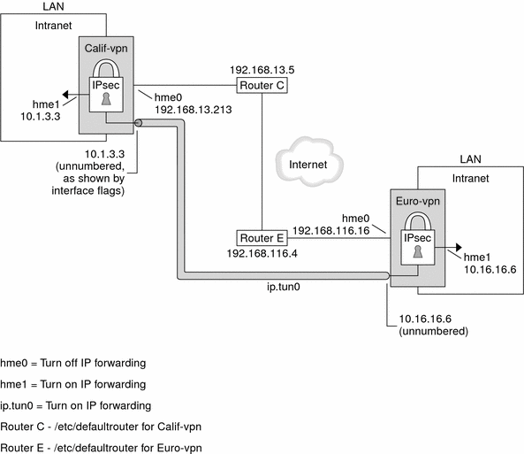

Previous
Previous
Example 20-6 Creating a Tunnel for FTP Traffic for All Subnets
In this example, IPsec policy protects the FTP ports in Figure 20-1 with 3DES for all subnets of Central to all subnets of Overseas. This configuration works for the active mode of FTP.
## IPsec policy for outbound FTP from Central to Overseas ##
{tunnel ip.tun0 negotiate tunnel ulp tcp rport 21}
ipsec {encr_algs 3des encr_auth_algs md5 sa shared}
{tunnel ip.tun0 negotiate tunnel ulp tcp lport 20}
ipsec {encr_algs 3des encr_auth_algs md5 sa shared}
|
## IPsec policy for inbound FTP from Central to Overseas ##
{tunnel ip.tun0 negotiate tunnel ulp tcp lport 21}
ipsec {encr_algs 3des encr_auth_algs md5 sa shared}
{tunnel ip.tun0 negotiate tunnel ulp tcp rport 20}
ipsec {encr_algs 3des encr_auth_algs md5 sa shared}
|
The IPv4 procedures in this section assume the following setup. For a depiction of the network, see Figure 20-2.
Each system is using an IPv4 address space.
For a similar example with IPv6 addresses, see How to Protect a VPN With an IPsec Tunnel in Tunnel Mode Over IPv6.
Each system has two interfaces. The hme0 interface connects to the Internet. In this example, Internet IP addresses begin with 192.168. The hme1 interface connects to the company's local area network (LAN), its intranet. In this example, intranet IP addresses begin with the number 10.
Each system invokes AH protection with the MD5 algorithm. The MD5 algorithm requires a 128-bit key.
Each system invokes ESP protection with the 3DES algorithm. The 3DES algorithm requires a 192-bit key.
Each system can connect to a router that has direct access to the Internet.
Each system uses shared security associations.
For a description of VPNs, see Virtual Private Networks and IPsec. Figure 20-2 describes the VPN that this procedure configures.
Figure 20-2 Sample VPN Between Offices Separated by the Internet
This procedure uses the following configuration parameters.
Parameter | Europe | California |
|---|---|---|
System name | enigma | partym |
System intranet interface | hme1 | hme1 |
System Internet interface | hme0 | hme0 |
System intranet address, also the -point address in Step 5 | 10.16.16.6 | 10.1.3.3 |
System Internet address, also the tsrc address in Step 5 | 192.168.116.16 | 192.168.13.213 |
Name of Internet router | router-E | router-C |
Address of Internet router | 192.168.116.4 | 192.168.13.5 |
Tunnel name | ip.tun0 | ip.tun0 |
 How to Protect a VPN With an IPsec Tunnel
in Tunnel Mode Over IPv4
How to Protect a VPN With an IPsec Tunnel
in Tunnel Mode Over IPv4
This procedure extends the procedure, How to Secure Traffic Between Two Systems With IPsec. In addition to connecting two systems, you are connecting two intranets that connect to these two systems. The systems in this procedure function as gateways.
Note - You configure IPsec policy in the global zone.
On the system console on one of the systems, assume the Primary Administrator role or become superuser.
The Primary Administrator role includes the Primary Administrator profile. To create the role and assign the role to a user, see Chapter 2, "Working With the Solaris Management Console (Tasks)," in System Administration Guide: Basic Administration.
Note - Logging in remotely exposes security-critical traffic to eavesdropping. Even if you somehow protect the remote login, the security of the system is reduced to the security of the remote login session.
Control the flow of packets before configuring IPsec.
Ensure that IP forwarding and IP dynamic routing are disabled.
# routeadm Configuration Current Current Option Configuration System State -------------------------------------------------- IPv4 forwarding disabled disabled IPv4 routing default (enabled) enabled ...If forwarding and routing are enabled, you can disable them by typing:
# routeadm -d ipv4-routing -d ipv4-forwarding # routeadm -u
Turning off IP forwarding prevents packets from being forwarded from one network to another network through this system. For a description of the routeadm command, see the routeadm(1M) man page.
Turn on IP strict destination multihoming.
# ndd -set /dev/ip ip_strict_dst_multihoming 1
Turning on IP strict destination multihoming ensures that packets for one of the system's destination addresses arrive at the correct destination address.
When you turn off IP forwarding and turn on IP strict destination multihoming, fewer packets flow all the way through the system. When strict destination multihoming is enabled, packets that arrive on a particular interface must be addressed to one of the local IP addresses of that interface. All other packets, even ones that are addressed to other local addresses of the system, are dropped.
Disable most network services, and possibly all network services.
Note - If your system was installed with the "limited" SMF profile, then you can skip this step. Network services, with the exception of Solaris Secure Shell, are disabled.
The disabling of network services prevents IP packets from doing any harm to the system. For example, an SNMP daemon, a telnet connection, or an rlogin connection could be exploited.
You have two options.
Run the "limited" SMF profile.
# netservices limited
Or, individually disable network services.
# svcadm disable network/ftp:default # svcadm disable network/finger:default # svcadm disable network/login:rlogin # svcadm disable network/nfs/server:default # svcadm disable network/rpc/rstat:default # svcadm disable network/smtp:sendmail # svcadm disable network/telnet:default # svcs | grep network online Aug_02 svc:/network/loopback:default ... online Aug_09 svc:/network/ssh:default ...
On each system, add a pair of SAs between the two systems.
Choose one of the following options:
Configure IKE to manage the keys for the SAs. Use one of the procedures in Configuring IKE (Task Map) to configure IKE for the VPN.
If you have an overriding reason to manually manage the keys, see How to Manually Create IPsec Security Associations.
On each system, add IPsec policy.
Edit the /etc/inet/ipsecinit.conf file to add the IPsec policy for the VPN. To strengthen the policy, see Example 20-7. For additional examples, see Example 20-3 and following.
For example, on the enigma system, type the following entry into the ipsecinit.conf file:
# LAN traffic to and from this host can bypass IPsec. {laddr 10.1.3.3 dir both} bypass {} # WAN traffic uses ESP with 3DES and MD5. {tunnel ip.tun0 negotiate tunnel} ipsec {encr_algs 3des encr_auth_algs md5 sa shared}On the partym system, type the following entry into the ipsecinit.conf file:
# LAN traffic to and from this host can bypass IPsec. {laddr 10.1.3.3 dir both} bypass {} # WAN traffic uses ESP with 3DES and MD5. {tunnel ip.tun0 negotiate tunnel} ipsec {encr_algs 3des encr_auth_algs md5 sa shared}
On each system, configure the tunnel, ip.tun0.
Use the following ifconfig commands to create the point-to-point interface:
# ifconfig ip.tun0 plumb # ifconfig ip.tun0 system1-point system2-point \ tsrc system1-taddr tdst system2-taddr
For example, on the enigma system, type the following commands:
# ifconfig ip.tun0 plumb # ifconfig ip.tun0 10.16.16.6 10.1.3.3 \ tsrc 192.168.116.16 tdst 192.168.13.213
On the partym system, type the following commands:
# ifconfig ip.tun0 plumb # ifconfig ip.tun0 10.1.3.3 10.16.16.6 \ tsrc 192.168.13.213 tdst 192.168.116.16
Protect the tunnel with the IPsec policy that you created.
# ipsecconf
Bring up the router for the tunnel.
# ifconfig ip.tun0 router up
On each system, turn on IP forwarding for the hme1 interface.
# ifconfig hme1 router
IP forwarding means that packets that arrive from somewhere else can be forwarded. IP forwarding also means that packets that leave this interface might have originated somewhere else. To successfully forward a packet, both the receiving interface and the transmitting interface must have IP forwarding turned on.
Because the hme1 interface is inside the intranet, IP forwarding must be turned on for hme1. Because ip.tun0 connects the two systems through the Internet, IP forwarding must be turned on for ip.tun0.
The hme0 interface has its IP forwarding turned off to prevent an outside adversary from injecting packets into the protected intranet. The outside refers to the Internet.
On each system, ensure that routing protocols do not advertise the default route within the intranet.
# ifconfig hme0 private
Even if hme0 has IP forwarding turned off, a routing protocol implementation might still advertise the interface. For example, the in.routed protocol might still advertise that hme0 is available to forward packets to its peers inside the intranet. By setting the interface's private flag, these advertisements are prevented.
Manually, add a default route over hme0.
The default route should be a router with direct access to the Internet.
# route add default router-on-hme0-subnet
For example, on the enigma system, add the following route:
# route add default 192.168.116.4
On the partym system, add the following route:
# route add default 192.168.13.5
Even though the hme0 interface is not part of the intranet, hme0 does need to reach across the Internet to its peer system. To find its peer, hme0 needs information about Internet routing. The VPN system appears to be a host, rather than a router, to the rest of the Internet. Therefore, you can use a default router or run the router discovery protocol to find a peer system. For more information, see the route(1M) and in.routed(1M) man pages.
Ensure that the VPN starts after a reboot by adding an entry to the /etc/hostname.ip.tun0 file.
system1-point system2-point tsrc system1-taddr tdst system2-taddr router up
For example, on the enigma system, add the following entry to the hostname.ip.tun0 file:
10.16.16.6 10.1.3.3 tsrc 192.168.116.16 tdst 192.168.13.213 router up
On the partym system, add the following entry to the hostname.ip.tun0 file:
10.1.3.3 10.16.16.6 tsrc 192.168.13.213 tdst 192.168.116.16 router up
On each system, configure the interface files to pass the correct parameters to the routing daemon.
On the enigma system, modify the /etc/hostname.interface files.
# cat enigma hostname.hme0 10.16.16.6 private
# cat enigma hostname.hme1 192.168.116.16 router
On the partym system, modify the /etc/hostname.interface files.
# cat partym hostname.hme0 10.1.3.3 private
# cat partym hostname.hme1 192.168.13.213 router
On each system, run a routing protocol.
You might need to configure the routing protocol before enabling routing. For more information, see Routing Protocols in the Solaris OS. For a procedure, see How to Configure an IPv4 Router.
# routeadm -e ipv4-routing # routeadm -u
Example 20-7 Requiring IPsec Policy on All Systems on a LAN
In this example, the administrator comments out the bypass policy that was configured in Step 4, thereby strengthening the protection. With this policy configuration, each system on the LAN must activate IPsec to communicate with the router.
# LAN traffic must implement IPsec.
# {laddr 10.1.3.3 dir both} bypass {}
# WAN traffic uses ESP with 3DES and MD5.
{tunnel ip.tun0 negotiate tunnel} ipsec {encr_algs 3des encr_auth_algs md5}
|
Example 20-8 Using IPsec to Protect Telnet Traffic Differently From SMTP Traffic
The first rule protects telnet traffic on port 23 with Blowfish and Sha-1. The second rule protects SMTP traffic on port 25 with AES and MD5.
{laddr 10.1.3.3 ulp tcp dport 23 dir both}
ipsec {encr_algs blowfish encr_auth_algs sha1 sa unique}
{laddr 10.1.3.3 ulp tcp dport 25 dir both}
ipsec {encr_algs aes encr_auth_algs md5 sa unique}
|
Example 20-9 Using an IPsec Tunnel in Tunnel Mode to Protect a Subnet Differently From Other Network Traffic
The following tunnel configuration protects all traffic from subnet 10.1.3.0/24 across the tunnel.
{tunnel ip.tun0 negotiate tunnel laddr 10.1.3.0/24}
ipsec {encr_algs aes encr_auth_algs md5 sa shared}
|
The following tunnel configurations protect traffic from subnet 10.1.3.0/24 to different subnets across the tunnel. Subnets that begin with 10.2.x.x are across the tunnel.
{tunnel ip.tun0 negotiate tunnel laddr 10.1.3.0/24 raddr 10.2.1.0/24}
ipsec {encr_algs blowfish encr_auth_algs md5 sa shared}
|
{tunnel ip.tun0 negotiate tunnel laddr 10.1.3.0/24 raddr 10.2.2.0/24}
ipsec {encr_algs blowfish encr_auth_algs sha1 sa shared}
|
{tunnel ip.tun0 negotiate tunnel laddr 10.1.3.0/24 raddr 10.2.3.0/24}
ipsec {encr_algs aes encr_auth_algs sha1 sa shared}
|